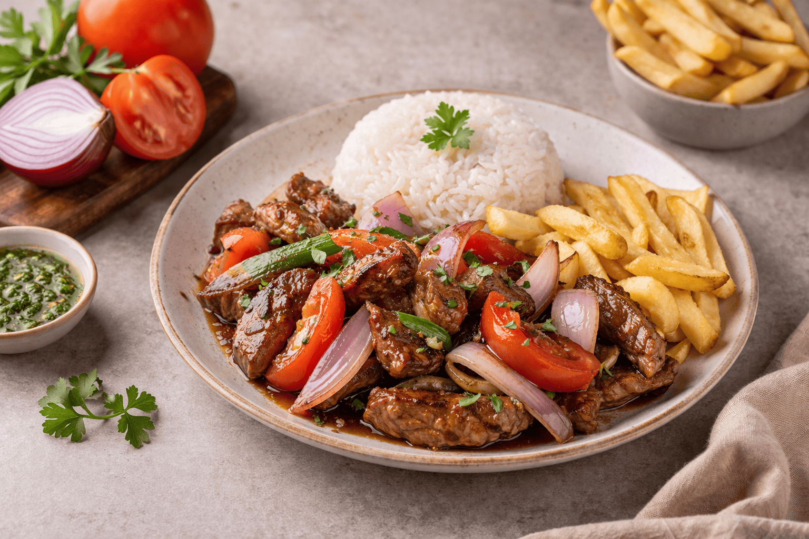

Home
Lomo Saltado

Descripción
El lomo saltado es uno de los platos emblemáticos y populares del Perú. La receta se basa en una fusión del
sabor peruano con la influencia asiática, utilizando la técnica de la cocción rápida en wok. Su origen se
remonta a
finales del siglo XIX con la migración china.
Suele acompañarse con papas fritas y arroz, logrando un equilibrio perfecto entre sabores y texturas. Es un
claro ejemplo de la cocina chifa y uno de los platos más representativos del país.
Ingredientes
- 500 g de lomo de res (en tiras gruesas).
- 2 cebollas rojas cortadas en gajos.
- 2 tomates en gajos grandes.
- 2 dientes de ajo picados.
- 1 ají amarillo en tiras (sin venas ni pepas).
- 3 cucharadas de sillao.
- 2 cucharadas de vinagre tinto.
- 1 cucharada de perejil o culantro picado.
- 3 cucharadas de aceite vegetal.
- Sal y pimienta al gusto.
- 4 papas yungay grandes (para freír).
- 2 tazas de arroz blanco graneado.
Pasos
-
Pela y corta las papas en bastones, fríelas en abundante aceite hasta que estén doradas y crocantes. Reserva.
-
En una sartén grande o wok, calienta el aceite a fuego alto.
-
Agrega la carne sazonada con sal y pimienta y saltea por unos minutos hasta dorarla sin que se cocine en exceso. Retira y reserva.
-
En la misma sartén, añade el ajo, el ají amarillo y la cebolla. Saltea brevemente.
-
Incorpora el tomate, el sillao y el vinagre. Cocina solo unos minutos para mantener las verduras crujientes.
-
Devuelve la carne a la sartén y mezcla todo con movimientos rápidos para integrar sabores.
-
Apaga el fuego y añade perejil o culantro picado.